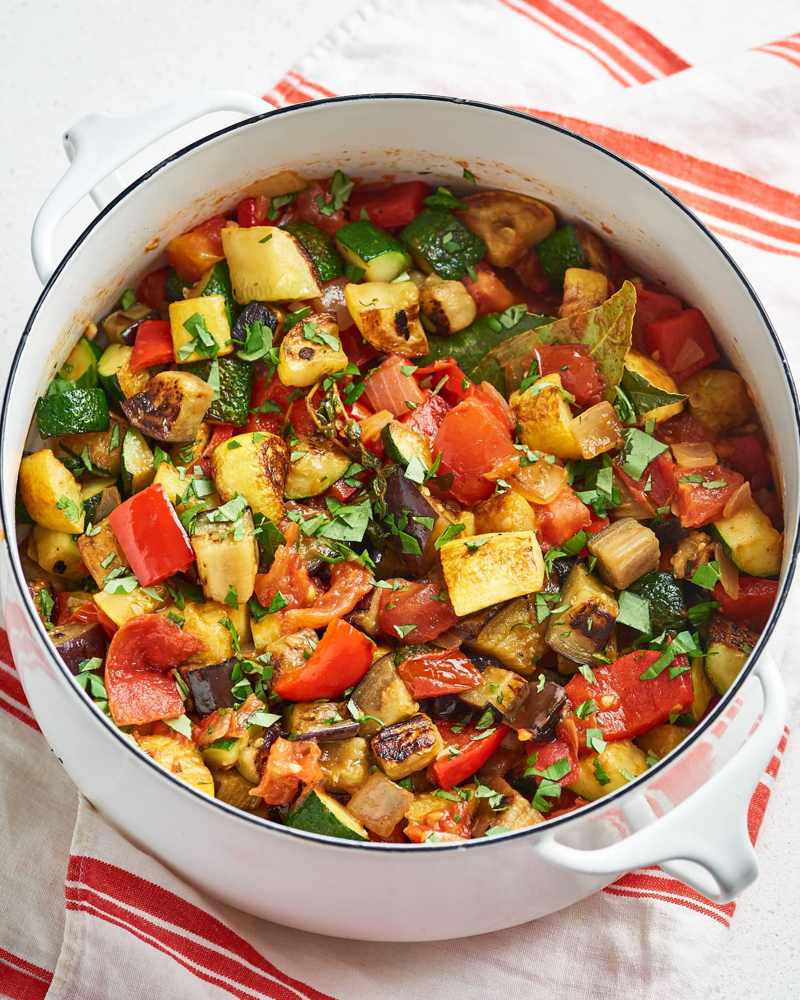

Ingredients
- 2 eggplants, cut into 2-centimeter pieces
- Salt
- Extra virgin olive oil
- 1 yellow onion, finely chopped
- 2 bell peppers, sliced into 2-centimeter pieces
- 6 garlic cloves, minced
- 1 Kg tomatoes, chopped
- 2 zucchini, sliced into 1-centimeter half moons
- 2 sprigs fresh thyme
- 1 teaspoon black pepper
- 1 teaspoon dried rosemary
Instructions
-
Prep the produce: Finely chop 1 yellow onion.
Slice 2 bell peppers into 1-inch pieces. Mince 6 garlic cloves
(see our how to mince garlic guide for tips). Chop 2 pounds of
tomatoes, saving their juice as you go. Slice 2 zucchini into
½-inch half moons.
-
Cook the onion and peppers: In a large heavy
pot, heat 4 tablespoons of olive oil over medium-high heat. When
the oil is shimmering, add the onions. Cook, stirring regularly,
until they’re translucent (about 5 minutes). Add the bell peppers
and cook until softened, about 4 minutes more.
-
Add the remaining veggies: Add the garlic,
tomatoes and their juice, zucchini, and eggplant. Stir in 2 sprigs
of thyme. Season with a pinch of salt and 1 teaspoon each of black
pepper and dried rosemary.
-
Cook and stir: Cook for 15 minutes, stirring
every 2 minutes, until the vegetables are soft and the liquid has
thickened.
-
Season: Remove the ratatouille from the heat,
taste, and adjust salt and pepper to your liking.
-
Serve: If you have time, cover and allow the
ratatouille to rest in its warm pot for 1 hour or so before
serving. When you’re ready to serve, ladle into bowls. Optionally,
top each with a sunny side up egg and pass around some crusty
bread for dipping. Enjoy warm, at room temperature, cold, any
which way!